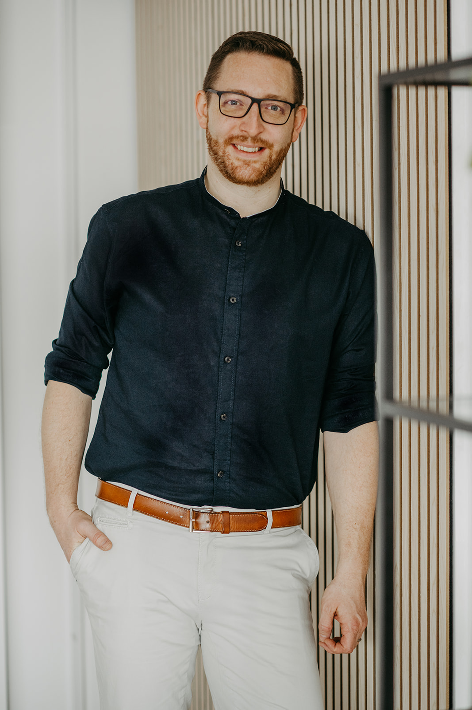
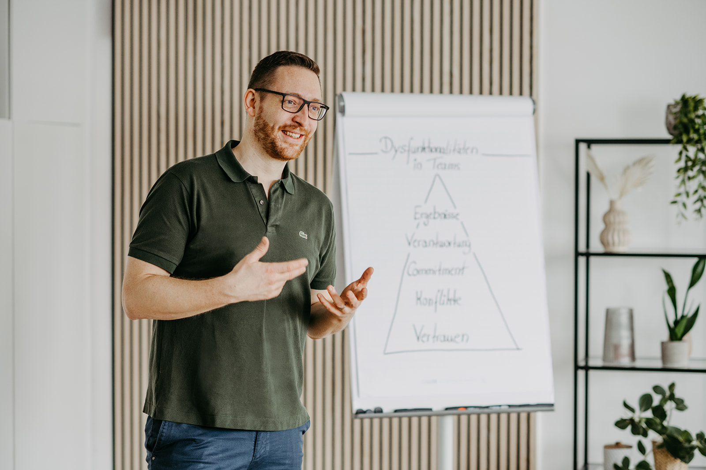

Kostenloses Online-Webinar mit Martin Groß
Führung im Zeitalter von KI.
KI übernimmt einen wachsenden Teil der Managementarbeit. Was bleibt, ist der schwierige Teil: Entscheidungen unter Unsicherheit, Konflikte, Menschen, die Halt brauchen. Zwei Tage darüber, welche Fähigkeiten jetzt über gute Führung entscheiden, warum sie sich nicht anlesen lassen und wie du sie entwickelst.
- Termin
- 25. + 26. Nov. 2026
- Umfang
- 2 × ca. 3 Stunden
- Format
- Online, kostenlos
Mit einer geführten Atemsession an Tag 2.

Die Managementarbeit wandert in die KI.
Lange konnte man sich als Führungskraft hinter der eigenen Auslastung verstecken: Meetings, Mails, Protokolle, Steuerung. Wer lieferte, war eine gute Führungskraft, und vieles andere stand in der Soft-Skill-Ecke.
Genau diese Arbeit rutscht jetzt Schritt für Schritt in den KI-Layer. Damit wird sichtbar, was gute Führung schon immer ausgemacht hat und lange optional war:
- Emotionale Intelligenz
- Klar bleiben unter Druck
- Ambiguität und Widersprüche halten
- Konflikte führen, statt sie zu glätten
- Menschen Orientierung geben, wenn sich vieles verändert
In keinem dieser Punkte fehlt es an Wissen. Wäre mehr Wissen die Lösung, wäre das Thema längst erledigt.
Intelligenz lässt sich outsourcen. Mensch-Sein nicht.
Jede technologische Revolution hat eine menschliche Fähigkeit nach außen verlagert und damit die nächste Ebene zum eigentlichen Unterschied gemacht. Das Vorherige verschwindet nicht. Es hört nur auf, der Unterschied zu sein.
- IndustrialisierungKörperkraft
- AutomatisierungHandwerk
- DigitalisierungWissen
- Künstliche IntelligenzIntelligenz
- Die nächste EbeneWeisheit
Die Frage ist nicht, wie KI-kompetent du wirst. Sondern wie gut du in dem bist, was dich menschlich macht.
Mit Weisheit ist nichts Abgehobenes gemeint: im richtigen Moment das Richtige tun, weil du mehr von dir selbst mitbringst. Präsent bleiben, wenn es intensiv wird. Kontakt halten, wenn es unbequem wird. Das ist der Teil von Führung, den kein System dir abnimmt.
Warum ein weiteres Seminar dafür nicht reicht.
Liefert inzwischen die KI
Wissen
Modelle, Konzepte, Frameworks zu emotionaler Intelligenz, Konflikt oder Resilienz. Jederzeit abrufbar.
Wird zunehmend assistiert
Können
Methoden anwenden, Gespräche strukturieren, Übungen anleiten. KI schlägt vor, erklärt und bereitet vor.
Bleibt beim Menschen
Verkörpern
Die Fähigkeit im Moment selbst zu zeigen: reguliert, präsent, unter Druck. Im Konflikt, in der Veränderung, im schwierigen Gespräch.
Ein agiles Tool lernst du an einem Tag und setzt es im nächsten Teammeeting ein. Emotionale Intelligenz nicht. Sie ist kein Wissensskill, sondern ein verkörperter: Sie entsteht durch Erfahrung, braucht einen geschützten Rahmen und Zeit.
Deshalb setzt dieses Webinar nicht nur beim Kopf an. Du bekommst die Einordnung, und du erlebst an Tag 2 selbst, wie sich dein Zustand verändern lässt.
Zwei Tage, zwei Perspektiven.
Agenda im EntwurfTag 1 · Mittwoch, 25. November
Die Landkarte.
- Was KI in Organisationen gerade wirklich verändert, und was nur Hype ist
- Wie sich Führung verschiebt, wenn Managementarbeit automatisiert wird
- Die Future-Leadership-Kompetenzen, die an Wert gewinnen
- Warum sie verkörpert sind und sich nicht in drei Seminartagen lernen lassen
Tag 2 · Donnerstag, 26. November
Die Erfahrung.
- Atemarbeit als Zustandslabor: was im Nervensystem passiert und warum es für Führung relevant ist
- Eine geführte Session mit Conscious Connected Breathing, live und online
- Von der eigenen Erfahrung in den Führungsalltag: Konflikt, Veränderung, schwieriges Gespräch
- Wie du diese Fähigkeiten über die nächsten Monate gezielt entwickelst
Zur Atemsession: Sie ist eine angeleitete Online-Variante, ruhiger als eine Session in Präsenz, und freiwillig. Hinweise zu Gegenanzeigen bekommst du mit der Anmeldebestätigung.
Für Menschen, die Verantwortung für andere tragen.
Du führst.
Du bist Führungskraft, Geschäftsführer oder Teil eines Leitungsteams und merkst, dass die Anforderungen an dich schneller wachsen als deine innere Kapazität.
- Du willst verstehen, wie sich deine Rolle durch KI verändert
- Du willst in Konflikt und Veränderung klarer und standfester werden
- Du suchst keinen weiteren Methodenkoffer, sondern Tiefe
Du entwickelst andere.
Du arbeitest als Trainer, Coach, Berater oder in der Personalentwicklung und begleitest Führungskräfte und Teams im B2B-Umfeld.
- Du willst wissen, was Unternehmen künftig noch von dir brauchen
- Du spürst, dass mehr Frameworks deine Wirkung nicht mehr vergrößern
- Du willst Embodiment seriös und anschlussfähig in deine Arbeit bringen
Vorerfahrung mit Atemarbeit oder Embodiment brauchst du nicht. Hilfreich ist die Bereitschaft, dir nicht nur Inhalte anzuhören, sondern auch etwas bei dir selbst wahrzunehmen.

Über Martin Groß.
„Viele Führungsprobleme sind in Wahrheit Zustandsprobleme.“
Martin kommt aus der Welt der kognitiven High Performer: BWL in Köln, mit Mitte zwanzig Verantwortung für 2.500 Menschen bei AIESEC, danach ein eigenes Unternehmen und fünf Jahre als Manager bei Accenture, PwC und EY.
Seit 2019 begleitet er als Trainer, Coach und Berater Führungskräfte, Teams und Organisationen. Er lehrt Unternehmensführung und KI an der TH Rosenheim, hat mit der Liz Mohn Stiftung das Future Leadership Training entwickelt und führt eine Praxis für Coaching und Atemarbeit bei München. Atemarbeit setzt er seit Jahren in Leadership-Programmen für Konzerne und Mittelstand ein, fundiert und ohne spirituelles Vokabular.
Erfahrung aus der Arbeit mit BMW, Bayer, Merck, Zeiss, DB Schenker, KfW, Deloitte und vielen Mittelständlern und Scale-ups.
Sichere dir deinen Platz.
- Tag 1Mittwoch, 25. November 2026, ca. 3 Stunden
- Tag 2Donnerstag, 26. November 2026, ca. 3 Stunden
- OrtLive online, den Zugangslink bekommst du per E-Mail
- KostenKeine
Kostenlos anmelden.
Trag dich ein, dann bekommst du den Zugang und alle Infos zu beiden Tagen.
Deine Daten nutzt Martin nur für das Webinar und dazugehörige Infos. Abmelden geht jederzeit. Datenschutz
Was du vermutlich noch wissen willst.
Kostet das Webinar etwas?
Nein. Beide Tage sind kostenlos. Am Ende stellt Martin seine Ausbildung in Embodied Leadership vor, für alle, die das Thema vertiefen wollen. Ob das für dich passt, entscheidest du.
Muss ich an beiden Tagen dabei sein?
Es lohnt sich. Tag 1 ordnet ein, was sich an Führung verändert. Tag 2 macht es erfahrbar. Zusammen ergeben sie das Bild.
Ist Atemarbeit im Unternehmenskontext nicht esoterisch?
Nicht, wenn sie sauber gerahmt ist. Martin nutzt Atemarbeit als Zustandslabor: Du erlebst in kurzer Zeit, wie sich Anspannung, Kontrolle und Klarheit im Körper verändern. Die Arbeit basiert auf Nervensystem-Forschung und kommt ohne spirituelles Vokabular aus.
Brauche ich Vorerfahrung mit Atemarbeit?
Nein. Die Session ist angeleitet und für Einsteiger gedacht. Du machst so weit mit, wie es für dich passt.
Was brauche ich technisch?
Einen Laptop oder Computer mit stabiler Internetverbindung, Kamera und Ton. Für die Atemsession an Tag 2 einen ruhigen Ort, an dem du dich hinlegen kannst.